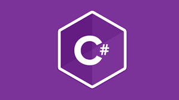

Numero de visitas:
Fecha:
Lenguajes de programacion
Un lenguaje de programación es un lenguaje informático especialmente diseñado para describir el conjunto de acciones consecutivas o instrucciones que un equipo informático debe ejecutar.
Los Lenguajes de programacion mas usados actualmente son:
Python
Python es un lenguaje de alto nivel de programación interpretado cuya filosofía hace hincapié en la legibilidad de su código, se utiliza para desarrollar aplicaciones de todo tipo, ejemplos: Instagram, Netflix, Panda 3D, entre otros

Javascript
JavaScript es un lenguaje de programación interpretado, dialecto del estándar ECMAScript. Se define como orientado a objetos, basado en prototipos, imperativo, débilmente tipado y dinámico.

Java
Java es un lenguaje de programación y una plataforma informática que fue comercializada por primera vez en 1995 por Sun Microsystems. Hay muchas aplicaciones y sitios web que no funcionarán, probablemente, a menos que tengan Java instalado, y cada día se crean más. Java es rápido, seguro y fiable

C#
"C#" es un lenguaje de programación multiparadigma desarrollado y estandarizado por la empresa Microsoft como parte de su plataforma .NET, que después fue aprobado como un estándar por la ECMA e ISO. C# es uno de los lenguajes de programación diseñados para la infraestructura de lenguaje común
C++
C++ es un lenguaje de programación diseñado en 1979 por Bjarne Stroustrup. La intención de su creación fue extender al lenguaje de programación C mecanismos que permiten la manipulación de objetos. En ese sentido, desde el punto de vista de los lenguajes orientados a objetos, C++ es un lenguaje híbrido

Lenguajes de programacion mas antiguos:
Fortran (1957)
Cobol (1959)
Basic (1964)
C (1969)
Pascal (1970)
FORmulaTRANslation es el lenguaje de programación más antiguo y que continúa en uso. Creada por John Backus, esta herramienta fue desarrollada para la computación científica de alto nivel, matemáticas y estadísticas
El Common Business Oriented Language está detrás de la mayoría de los sistemas de transacciones de negocio de los procesos de las tarjetas de crédito, ATMs (Modo de Transferencia Asíncrona), telefonía, sistemas hospitalarios, gobierno, sistemas automatizados y señales de tráfico.
Creado por estudiantes de Dartmouth College, el denominado Beginners All Purpose Symbolic Instruction Code fue diseñado como un lenguaje simplificado para aquellos que no tenían como base fuertes conocimientos técnicos o matemáticos. Una versión modificada, escrita por Bill Gates y Paul Allen, llegó a ser el primer producto de Microsoft. Fue vendido al M.I.T.S. para el Altair.
Este lenguaje fue desarrollado entre 1969 y 1973 por Dennis Ritchie para los laboratorios Bell Telephone para usarlos en el sistema Unix. Se le llamó «C» porque sus características derivaban de un lenguaje anterior llamado «B». C llegó a ser tan poderoso que la mayoría del núcleo de Unix fue reescrito con él. De hecho, hoy en día, Linux está todavía basado en C
El lenguaje se llamó así en honor de Blaise Pascal, el inventor de las calculadoras matemáticas, aunque su creador se llamaba Niklaus Wirth, y lo desarrolló como una herramienta de enseñanza y formación aunque tiene un uso meramente comercial. Este lenguaje se usa en Skype.
Links
Lenguajes de programacion 1Lenguajes de programacion 2